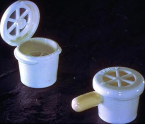
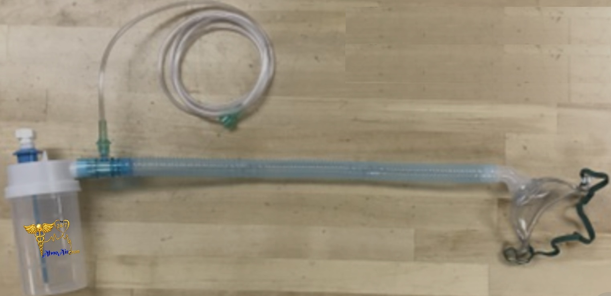
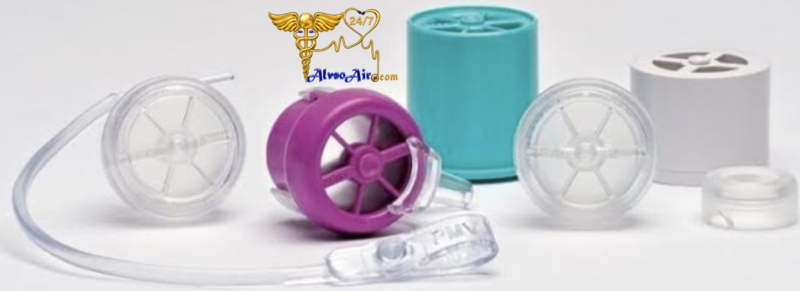

Common Areas I Can Help You With

Types of Trach Tubes
Understanding the differences between cuffed, cuffless, and fenestrated tubes, and when each type is typically used.

Trach Care & Cleaning
How to properly clean the inner cannula, change dressings, and maintain hygiene to reduce the risk of infection and blockage.

Speaking Valves
When and how to use speaking valves safely to improve communication, and what to watch for during use.
Secretion Management
Techniques to manage mucus, including suctioning basics, hydration, and recognizing signs of buildup or blockage.

Troubleshooting Issues
Guidance for common concerns such as noise, resistance, discomfort, or changes in breathing patterns.

Daily Living
Practical tips for eating, speaking, mobility, and maintaining comfort during everyday activities.
If you are unsure about your equipment, care routine, or changes in your breathing, I can guide you step by step so you feel more confident and prepared.